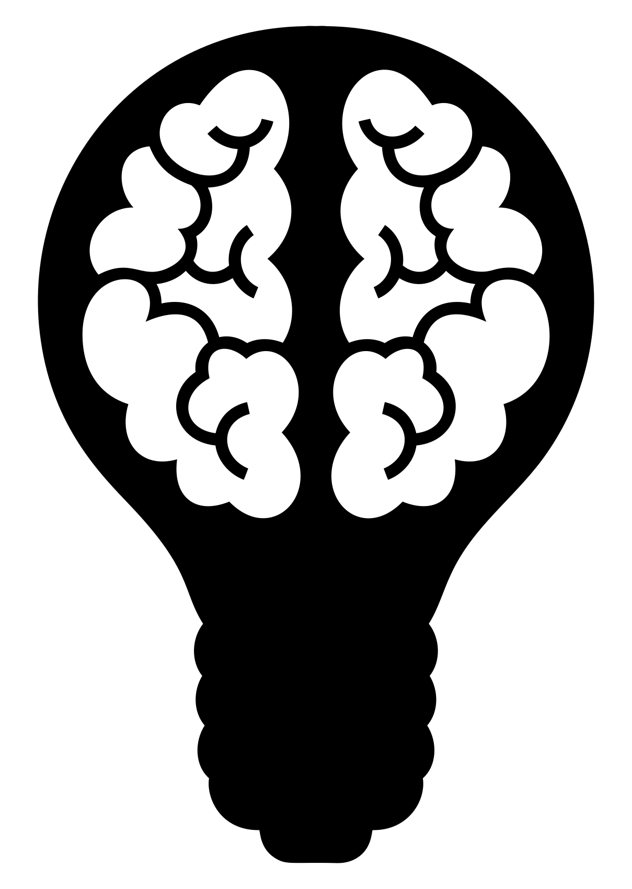
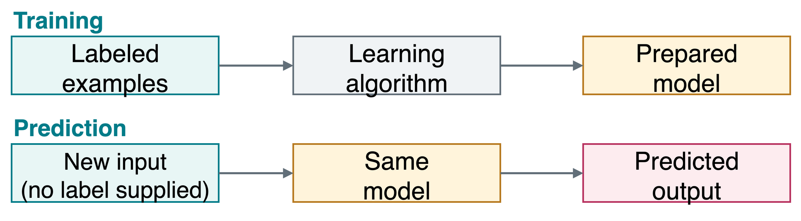
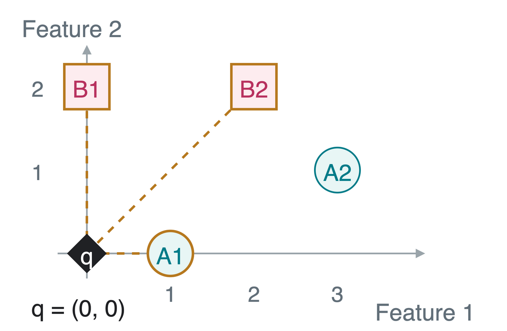
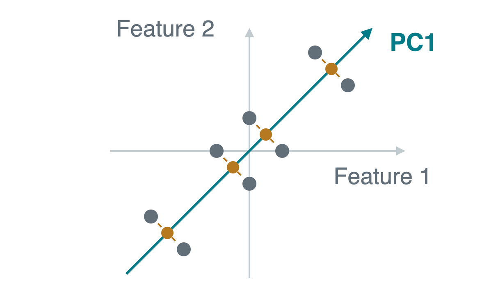
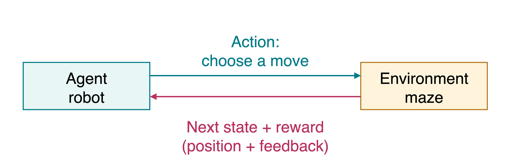
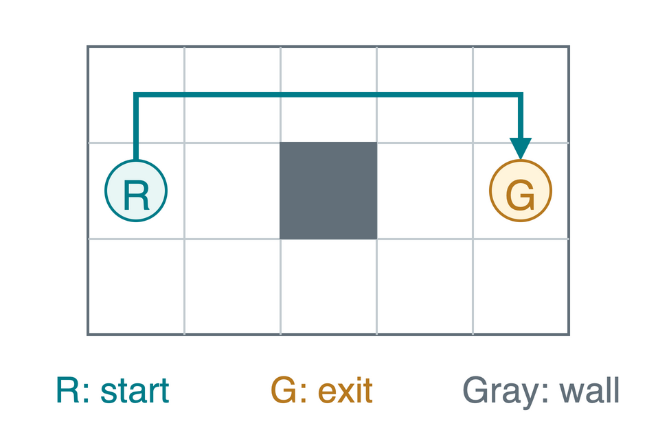

CS 463G & CS 663
(Intro to) AI
Lecture 24: Machine Learning
Fall 2026
Why Learn from Examples?
How would we recognize a handwritten digit from its pixels?
- People write the same digit in many different ways.
- A fixed list of shape rules is difficult to make complete.
- Examples can reveal useful patterns we did not specify by hand.

Machine learning (ML) uses experience or data to prepare a model for predictions or decisions.
Explicit rules and learning can work together. A learned prediction can support a search algorithm or a rule-based system.
Training and Prediction
A model maps an input to an output. A label is an example’s supplied target answer, such as the digit in an image.
One example using labeled data:

- Training (or fitting) prepares the model using the available examples.
- Prediction applies that model to a new input.
The new input’s label is not an input to the prediction step.
Three Learning Settings
The feedback available to the learner determines the setting.
| Setting | Available feedback | Example |
|---|---|---|
| Supervised learning | Inputs paired with target labels | Image and its digit answer |
| Unsupervised learning | Inputs without target labels | Group similar images |
| Reinforcement learning (RL) | Reward: numerical feedback from interaction | Learn moves that lead a robot to an exit |
Are we given target answers, only inputs, or feedback from actions?
Supervised Tasks: Categories or Numbers
Features are the input measurements. The label is the target output supplied for each training example.
| Task | Output | Features and label |
|---|---|---|
| Classification | A category | Pixel intensities; digit category 0-9 |
| Regression | A numerical value | Floor area and location; house price |
The digit 7 is a category here, not an amount to be averaged.
A loss scores prediction error. Examples: 0 for a correct category and 1 for a wrong one, or squared error for a numerical prediction.
The task determines what a good prediction means and how we measure its error.
k-Nearest Neighbors
k-nearest neighbors (k-NN) stores labeled examples. For a new input, it finds the k closest stored examples and lets their labels vote.
Let q=(q_1,q_2) be the query, the new input. Let x=(x_1,x_2) be a stored example with two numerical features.
Euclidean distance is straight-line distance:
d(q,x)=\sqrt{(q_1-x_1)^2+(q_2-x_2)^2}.
For N stored examples, choose an integer k with 1\leq k\leq N.
For classification, the most frequent label among the selected neighbors wins. k-NN can also do regression by averaging their numerical targets.
A Neighbor Vote, Worked Out
Two features are already on comparable scales. The query is q=(0,0); letters A and B are class labels.

The three nearest examples:
| Example | Features | Distance |
|---|---|---|
| A1 | (1,0) | 1 |
| B1 | (0,2) | 2 |
| B2 | (2,2) | \sqrt{8}\approx2.83 |
With k=1, A1 alone votes: predict A.
With k=3, the votes are A, B, B: predict B.
k-NN Prediction Algorithm
Let D contain N stored (features, label) pairs. mostVotes returns the most frequent label. Assume 1\leq k\leq N.
Fix a rule for ties, such as a fixed class order. An odd k does not prevent all ties when there are more than two classes.
Store examples during training. Compute distances and vote during prediction.
Feature Scales Change the Neighbors
Suppose the features are an object’s height and mass.
| Object | Height (cm) | Mass (g) |
|---|---|---|
| Query | 10 | 100 |
| A | 11 | 150 |
| B | 20 | 102 |
Using cm and g: distance to A \approx50.01, to B \approx10.20. B is closer.
Convert mass to kg: distance to A \approx1.001, to B \approx10.000. A is closer.
Choose meaningful feature scales. Estimate any scaling settings from training data, then apply the same transformation to new inputs.
Evaluation on Unseen Examples
Generalization means performing well on new examples. A hyperparameter is a chosen setting, such as k.
| Data split | Purpose |
|---|---|
| Training | Fit a model, or store reference examples for k-NN |
| Validation | Compare choices such as different values of k |
| Test | Evaluate the final choice without using these answers to select it |
Accuracy is the fraction of predictions that match the labels:
\text{accuracy}=\frac{\text{number correct}}{\text{number evaluated}};\qquad \frac{12}{15}=0.80.
A test score stops being an independent final check if we repeatedly use it to choose k.
Unsupervised Learning Tasks
We have inputs but no supplied target answers.
| Task | Meaning | Example |
|---|---|---|
| Clustering | Group similar examples | Group handwriting styles without digit labels |
| Dimensionality reduction | Represent inputs with fewer coordinates | Compress hundreds of pixel features |
| Anomaly detection | Find examples unusual relative to the data | Flag an unusual image for inspection |
A discovered group or unusual example still needs interpretation. An unusual transaction, for example, is not automatically fraud.
Principal Component Analysis (PCA)
PCA reduces the number of coordinates. First center the data: subtract each feature’s mean.

- Variance measures spread around the mean.
- The first principal component (PC1) is the direction with greatest variance.
- Projection drops each point onto that line, giving one coordinate instead of two.
Gray: original points. Gold: projected points.
Preserving spread does not guarantee preserving the information needed to predict a label.
Reinforcement Learning Through Interaction
In reinforcement learning, an agent (the learner) acts in an environment (the world it interacts with).

- State: the current situation, such as the robot’s position.
- Action: a choice, such as moving up or right.
- Policy: the rule used to choose actions from states.
The goal is high total reward over time. A reward may arrive later and need not tell us which action was correct.
Robot Navigation: Rewards and a Policy
A policy chooses up, down, left, or right for each square. Reaching the exit ends the run.

Illustrative rewards:
| Outcome | Reward |
|---|---|
| Ordinary move | -1 |
| Attempt to enter a wall: stay put | -3 |
| Enter the exit | +10 |
The marked route has six moves: five ordinary moves, then the exit. Total reward: 5(-1)+10=5.
The robot learns which moves lead to reward. We do not supply a correct-move label for every square.
Quick Check: What Feedback Is Available?
- Predict tomorrow’s temperature using past weather records paired with the next day’s temperature.
- Group handwriting images without being given their digit labels.
- Let a robot try moves and receive rewards for reaching an exit.
1. Supervised regression: the training examples have numerical targets.
2. Unsupervised clustering: no target groups are supplied.
3. Reinforcement learning: feedback comes from interaction.
Takeaways
- Features describe inputs. Labels supply targets in supervised learning.
- k-NN predicts using nearby stored examples. The choice of features, scales, and k matters.
- Validation helps choose settings. Unseen test examples check the final choice.
- PCA finds directions of large variation without using labels.
- Reinforcement learning uses rewards from interaction to learn decisions.
A useful model must work on new examples, beyond the data used to prepare or choose it.
Notebook Example: Handwritten Digits
MNIST (Modified National Institute of Standards and Technology) contains 28\times28 grayscale digit images.

- Features: flatten the image into 28\times28=784 pixel values. The distance compares all 784 values.
- Label: the digit category, 0 through 9.
- This notebook stores 10,000 training examples, then predicts using k=3. Its
fitmethod stores examples rather than learning weights.